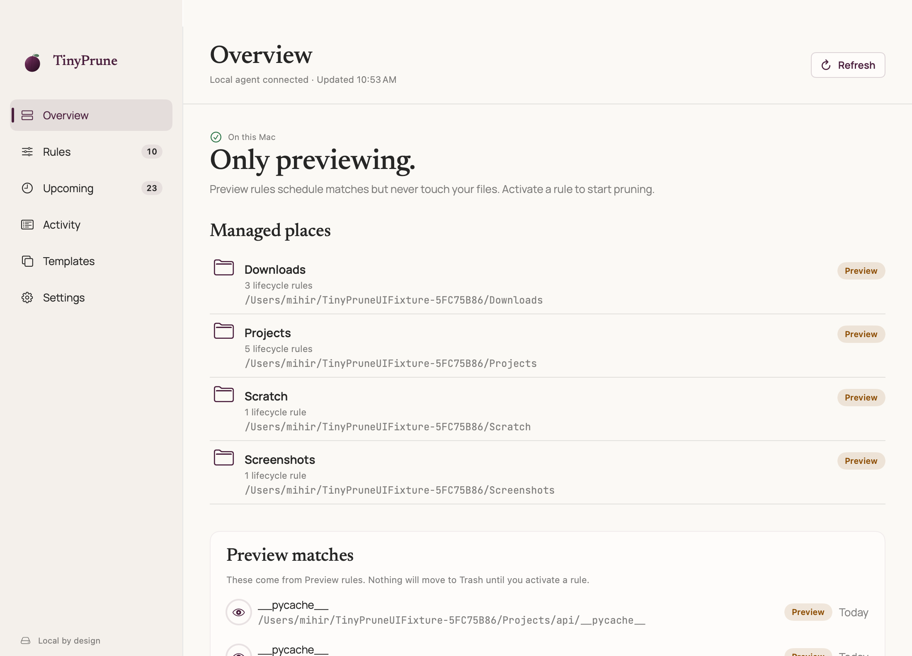
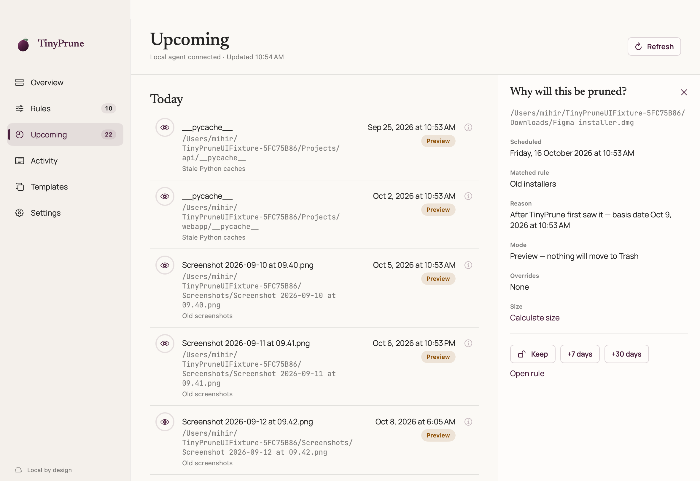
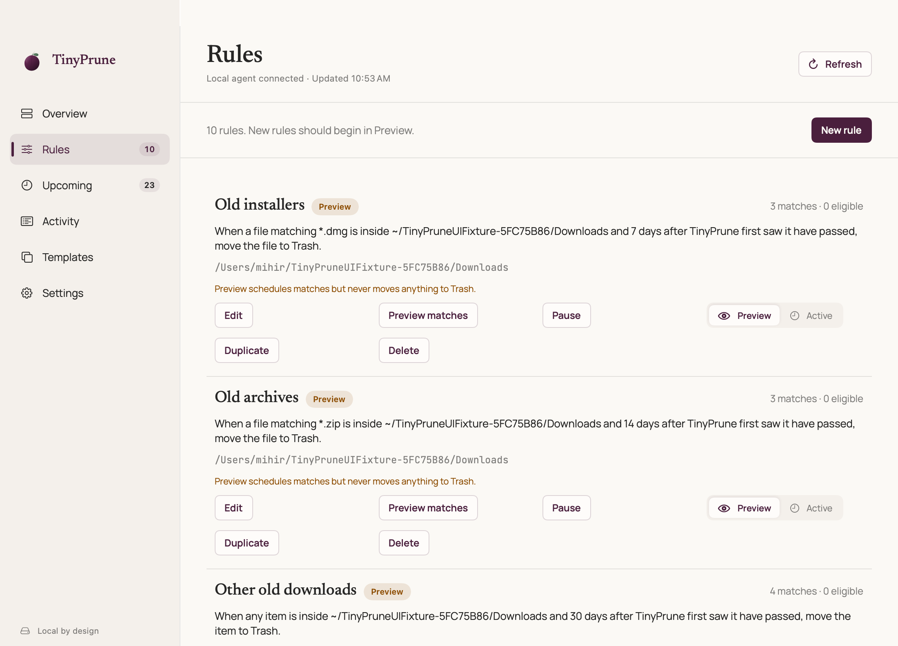
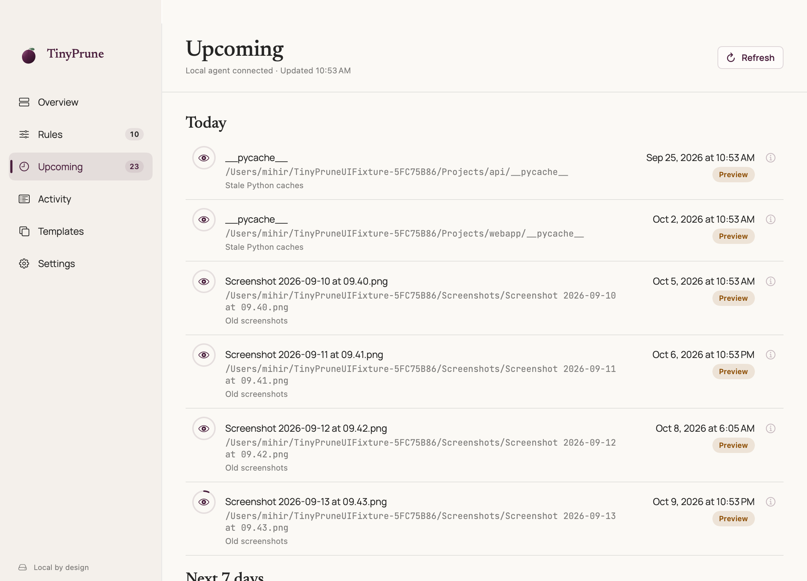

Trash only.
Expired items go to macOS Trash. TinyPrune never permanently deletes them or empties your Trash.
Keep what matters. Let disposable files move to Trash on a schedule you choose.

Try a rule. Move time forward. Keep something worth keeping.
~/DownloadsClick a file to toggle KeepPreview never touches a file.
Choose a file to see its rule, deadline and Keep override.
Sample folder, simulated time. No real files are touched.
Cleanup should be a decision, not a leap of faith.
Expired items go to macOS Trash. TinyPrune never permanently deletes them or empties your Trash.
One Keep overrides every rule. A kept item also protects its containing folder from cleanup.
important.pdfKeepSee what matches without moving a single file.

Identity, rules, Keep, deadline, pause state, permissions and volume availability are checked again.
Core cleanup reads filesystem metadata, not file contents. Your files stay on your Mac.
The app has no telemetry. This website uses Google Analytics and PostHog.
For the things you can rebuild
Expire node_modules after 30 days of project inactivity. Give .venv 45. Leave your source alone.
Developer templates start in Preview. Review the matches and explanations before enabling cleanup.
Read the rule guide

Coding agents and LLM tools spin up scratch projects, git worktrees, virtual environments, build output and debug logs faster than anyone tidies them. Give that clutter a lifetime so your Mac stays healthy without a cleanup day.
Point a rule at the folder where agents create throwaway work. Items nobody has touched for a few days move to Trash on schedule.
Expire node_modules, .venv, dist, build and caches after project inactivity. Your source stays put.
Match log and trace filenames in a folder you choose, then expire them by age instead of hunting them down by hand.
Preview every rule first, and mark anything worth saving with Keep. Everything moves to Trash, never permanent deletion, so a rule that is too eager is recoverable until you empty it.
How to prune agent clutterChoose a template, then make the rule your own.
Cache templates start in Preview. Choose and authorize the actual folder. Caches can be needed for offline installs; close the owning app and stop builds before enabling cleanup.
See all template detailsFree and open source. For macOS 14 or later.
Then open TinyPrune from Applications, or run open /Applications/TinyPrune.app. It lives in the menu bar and its own window. Early builds are unsigned and not notarized. Read the first-launch instructions.